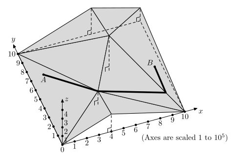

有一片高原，其中位于 $\left( x, y \right)$ 处的高度为 $z \left( x, y \right)$。求从 $\left( x_1, y_1 \right)$ 到 $\left( x_2, y_2 \right)$ 的所有路线中，经过最高点的高度的最小值，并找出这样的一条路径。
地形可以用若干个空间三角形来描述。第一行包含一个正整数 $n$ ($2 \leq n \leq 2000$)，表示三角形的个数。
接下来 $n$ 行，每行 $9$ 个非负整数 $x_A, y_A, z_A, x_B, y_B, z_B, x_C, y_C, z_C$，描述一个三角形 $\triangle ABC$ 的三个顶点的坐标。
保证这 $n$ 个三角形在 $Oxy$ 平面上的投影不重叠且恰好覆盖矩形 $\left[ 0, 10^6 \right]^2$。且对于一个固定的顶点 $\left( x_i, y_i \right)$，它所对应的 $z_i = z \left( x_i, y_i \right)$ 是固定的，且对于 $\forall \left( x, y \right) \in \left[ 0, 10^6 \right]^2$，都有 $0 \leq z \left( x_i, y_i \right) \leq 10^6$。
最后两行，每行三个正整数 $x_1, y_1, z_1, x_2, y_2, z_2$，描述起点 $A$ 和终点 $B$ 的坐标。保证 $0 \leq x_1, y_1, x_2, y_2 \leq 10^6, z_1 = z \left( x_1, y_1 \right), z_2 = z \left( x_2, y_2 \right)$。
显然存在一条最优路线是折线 $A = P_1, P_2, \cdots, P_{m-1}, P_m = B$。第一行输出一个整数 $m$ ($2 \leq m \leq 5 n$)，表示折线上点的个数。
接下来 $m$ 行，每行三个正整数 $x_i, y_i, z_i$，表示 $P_i = \left( x_i, y_i, z_i \right)$。
最小化最大值，先考虑二分答案 $h$。
然后，若 $A, B$ 不是顶点，我们将 $A, B$ 所在的三角形细分 (即连接 $A$/$B$ 和它所在三角形的三个顶点，分成 $2$ 或 $3$ 个小三角形)。
由三角形的凸性知，(在细分完毕的图中) 存在一条最优路径只经过三角形的顶点。
于是我们只需要提取出所有高度 $\leq h$ 的顶点，判断 $A$ 和 $B$ 是否连通即可。总时间复杂度 $O \left( n \left| \log eps \right| \right)$。
当然，注意到答案一定是 (细分完毕的图中) 某个顶点的高度，因此可以直接在高度集合中二分而不是二分实数，时间复杂度 $O \left( n \log n \right)$。
更进一步，注意到我们可以一开始建立出图，然后就是寻找图中两点间使得点权最大值最小的路径，这是一个最小瓶颈路问题，可以将点排序后使用并查集解决，于是就不需要二分了，时间复杂度 $O \left( n \cdot \alpha \left( n \right) \right)$。
#include <bits/stdc++.h>
#define EB emplace_back
#define dot(x, y, z) (((y) - (x)) * ((z) - (x)))
#define cross(x, y, z) (((y) - (x)) ^ ((z) - (x)))
using std::cin;
using std::cout;
typedef long long ll;
typedef unsigned long long u64;
typedef std::vector <int> vector;
typedef std::pair <int, int> pr;
typedef std::tuple <int, int, int> triangle;
typedef std::unordered_map <u64, int> map;
const int N = 6054;
struct vec2 {
int x, y;
vec2 (int x0 = 0, int y0 = 0) : x(x0), y(y0) {}
friend std::istream & operator >> (std::istream &in, vec2 &B) {return in >> B.x >> B.y;}
friend std::ostream & operator << (std::ostream &out, const vec2 &B) {return out << B.x << ' ' << B.y;}
inline vec2 operator - (const vec2 &B) const {return vec2(x - B.x, y - B.y);}
inline ll operator * (const vec2 &B) const {return (ll)x * B.x + (ll)y * B.y;}
inline ll operator ^ (const vec2 &B) const {return (ll)x * B.y - (ll)y * B.x;}
} p[N];
int n, V, Tr, si, ti;
int h[N], h_list[N];
int que[N], from[N], path[N];
vector G[N];
triangle t[N];
map M;
inline void link(int u, int v) {G[u].EB(v), G[v].EB(u);}
inline int max(const int x, const int y) {return x < y ? y : x;}
inline bool in_triangle(const vec2 &P, const vec2 &A, const vec2 &B, const vec2 &C) {return cross(P, A, B) >= 0 && cross(P, B, C) > 0 && cross(P, C, A) > 0;}
int id(const vec2 &P) {
map::iterator it; bool ret; std::tie(it, ret) = M.emplace(P.x | (u64)P.y << 32, V + 1);
return ret ? ++V : it->second;
}
pr subdivide(const vec2 &P) {
map::iterator it = M.find(P.x | (u64)P.y << 32);
if (it != M.end()) return pr(it->second, 0);
int i, A, B, C;
for (i = 0; i < Tr; ++i) {
std::tie(A, B, C) = t[i];
if (in_triangle(P, p[A], p[B], p[C]))
return link(++V, A), link(V, B), link(V, C), pr(V, i + 1);
}
throw "error";
}
inline bool bfs(int height) {
int x, h, t = 1;
memset(from, 0, (V + 1) << 2), *que = si, from[si] = si;
for (h = 0; h < t; ++h)
for (int y : G[x = que[h]]) if (::h[y] <= height && !from[y]) from[y] = x, que[t++] = y;
return from[ti];
}
int main() {
int i, j, iA, iB, iC, hA, hB, hC, L, R, M; vec2 A, B, C; ll cr;
std::ios::sync_with_stdio(false), cin.tie(NULL);
cin >> Tr;
for (i = 0; i < Tr; ++i) {
cin >> A >> hA >> B >> hB >> C >> hC,
cr = cross(A, B, C), assert(cr);
if (cr < 0) std::swap(B, C), std::swap(hB, hC);
p[iA = id(A)] = A, h[iA] = hA,
p[iB = id(B)] = B, h[iB] = hB,
p[iC = id(C)] = C, h[iC] = hC,
t[i] = triangle(iA, iB, iC),
link(iA, iB), link(iB, iC), link(iC, iA);
}
cin >> A >> hA >> B >> hB;
std::tie(si, i) = subdivide(A), p[si] = A, h[si] = hA,
std::tie(ti, j) = subdivide(B), p[ti] = B, h[ti] = hB;
if (i && i == j) return cout << '2' << '\n' << A << ' ' << hA << '\n' << B << ' ' << hB << '\n', 0;
for (i = 1; i <= V; ++i) std::sort(G[i].begin(), G[i].end()), G[i].erase(std::unique(G[i].begin(), G[i].end()), G[i].end());
memcpy(h_list, h + 1, V << 2), std::sort(h_list, h_list + V),
n = std::unique(h_list, h_list + V) - h_list,
L = std::lower_bound(h_list, h_list + n, max(hA, hB)) - h_list;
for (R = n - 1; L < R; bfs(h_list[M = (L + R) / 2]) ? R = M : L = M + 1);
bfs(h_list[L]);
for (j = 0, i = ti; i != si; i = from[i]) path[j++] = i;
path[j++] = i, cout << j << '\n';
for (i = j - 1; i >= 0; --i) cout << p[path[i]] << ' ' << h[path[i]] << '\n';
return 0;
}
坑1：当 $A, B$ 在同一个三角形中时，线段 $AB$ 一定是最优解，此时可以直接输出而不需要细分。
坑2：二分时可以去掉比 $\max \left\{ z_A, z_B \right\}$ 低的高度。